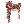
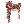
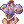

Wanderer
  | |||||||||||||||||||
|---|---|---|---|---|---|---|---|---|---|---|---|---|---|---|---|---|---|---|---|
| |||||||||||||||||||
The Wanderer (Wand) is the 3rd job class of Dancers. Wanderers are primarily a support class, utilising musical skills to buff their teammates and disable/debuff their enemies. While their male counterpart has strong buffs such as  Poem of Bragi, Wanderers bring more fun to the party by adding powerful buffs in the equation such as
Poem of Bragi, Wanderers bring more fun to the party by adding powerful buffs in the equation such as  Fortune's Kiss, that increases the CRIT and CRIT DMG of players, and
Fortune's Kiss, that increases the CRIT and CRIT DMG of players, and  Swing Dance, that increases the ASPD. With such a powerful utility, Wanderers are often an essential part of parties, in both PvM and BG/WOE.
Swing Dance, that increases the ASPD. With such a powerful utility, Wanderers are often an essential part of parties, in both PvM and BG/WOE.
The male counterpart of the Wanderer is the Minstrel.
Player Guides
Builds
Severance Rainstorm
The main point of this build is to kill things with  Severe Rainstorm. If you've trouble with the cooldown of the skill, you can use
Severe Rainstorm. If you've trouble with the cooldown of the skill, you can use  Great Echo and
Great Echo and  Throw Arrow during it.
Throw Arrow during it.
Be aware that a pure focused build on Severe Rainstorm will make use of  [Bio 5] Trentini cards to maximize the damage of the skill so if you want to go with a rotation of skill, you may want to exchange them for something else like
[Bio 5] Trentini cards to maximize the damage of the skill so if you want to go with a rotation of skill, you may want to exchange them for something else like  Contaminated Wanderer or White Knight cards.
Contaminated Wanderer or White Knight cards.
It's also not worth to use a bow as a weapon because using it with an instrument provides you extra damage and if you can get your hands into a +11 Safety Whip [2], you reduce the cooldown of it by 2 seconds. While there is a neat way to use a bow with  Double Strafe and
Double Strafe and  Archer Shadow Ring to get a bit more of ATK for Severe Rainstorm, that locks you out of Great Echo and Throw Arrow and both add more damage than what you achieve with it.
Archer Shadow Ring to get a bit more of ATK for Severe Rainstorm, that locks you out of Great Echo and Throw Arrow and both add more damage than what you achieve with it.
Severance Rainstorm Build
- STR : Leftovers
- AGI : 100-130
- VIT : 100 TOTAL at least
- INT : 90-120
- DEX : 120-130
- LUK : 1-100
DEX is your main stat for damage while AGI will buff the damage further.
You want at least 120 DEX because it let's you use  Temporal Boots Of Dexterity and remove the fixed cast portion of the skill (you can also use
Temporal Boots Of Dexterity and remove the fixed cast portion of the skill (you can also use  +7 Illusion Leg A-type and add the
+7 Illusion Leg A-type and add the  Modification Module (Fixed Casting) enchant if you already have one from another class of find one cheaper but Temporal Boots Of Dexterity is a better footgear in the long run since it combos with the  King Schmidt's Strong Insignia) and also gives you damage. Later on you may want to add a few more points if you need to achieve a faster/instant cast since it makes a bit of a difference while mobbing.
Modification Module (Fixed Casting) enchant if you already have one from another class of find one cheaper but Temporal Boots Of Dexterity is a better footgear in the long run since it combos with the  King Schmidt's Strong Insignia) and also gives you damage. Later on you may want to add a few more points if you need to achieve a faster/instant cast since it makes a bit of a difference while mobbing.
INT is mainly for the cast since having insta-cast through stats makes a difference when you're mobbing and want to kill it with a SR.
LUK is mainly if you want to be immune to chaos and/or curse (it's annoying in some cases) or just a bit more of ATK.
VIT to make you a bit tanky and evade stun.
Leftover points go into STR to carry more quivers and gear.
Metallic Sound
The first of the two magic builds available to a Wanderer.
Before even thinking about this build, you need to be sure that you already own a  +11 Heart Whip [2] and a
+11 Heart Whip [2] and a  +10 Wing Headphone [1]/
+10 Wing Headphone [1]/ +10 Wing Headphone[EVT] [1] or it's pointless to make one. This is advised in advance because
+10 Wing Headphone[EVT] [1] or it's pointless to make one. This is advised in advance because  Metallic Sound has 4 seconds of cooldown at level 10 and the only way to reduce that is through the use of those two items.
Metallic Sound has 4 seconds of cooldown at level 10 and the only way to reduce that is through the use of those two items.
Metallic Sound is a neutral magical skill with 1s of delay and 4s of cooldown. Since you already have the cooldown part nullified (check above), all that is left is to reduce the delay by 86% to achieve max damage per second at 193 ASPD.
Cast time is also not a problem. You will always use two Sound Amplifiers to boost your damage by 300%, 150% each, and since each one reduces the variable cast time by 50% and the skill doesn't have fixed cast time, you end with -100% variable cast time. Be aware that this also means that the SP cost of the skill increases by a decent amount.
And yes, 193 ASPD isn't hard to achieve. Any Wanderer has access to Swing Dance (yes,  Moonlit Serenade isn't that great since what it provides barely makes a difference in your DPS) and that increases your ASPD by a lot.
Moonlit Serenade isn't that great since what it provides barely makes a difference in your DPS) and that increases your ASPD by a lot.
Other Info:
 Plaga, the combo
Plaga, the combo  Ungoliant+
Ungoliant+ Jewelry Ant, and
Jewelry Ant, and  Dwigh increases neutral magical damage without thinking too much. Be aware that Dwigh is expensive.
Dwigh increases neutral magical damage without thinking too much. Be aware that Dwigh is expensive.
 Singing Ferre+
Singing Ferre+ Playing Ferre is a cheap way to increase the skill damage by +50%.
Playing Ferre is a cheap way to increase the skill damage by +50%.
Metallic Sound Build
- STR : Leftovers
- AGI : 1-90
- VIT : 100 TOTAL at least
- INT : 120-130
- DEX : 1-130
- LUK : 1-100 TOTAL
Since this build ends having no cast through gear, the only important things to be aware is to at least have high values of INT and at least 100 total VIT to prevent stun. All the rest is up to the gear and preferences.
STR is mainly leftovers to carry some extra gear and/or SP potions (if needed).
AGI is enough to achieve 193 ASPD with Swing Dance (even without any increasing ASPD/AGI gear you won't need more than 90 base AGI if you've a decent amount of DEX). Depending on your preferences and needs, you may even aim to get 100 total AGI to prevent sleep.
At least 100 total VIT is for the extra HP and to prevent STUN. You may add more if you see that it helps to survive on what you're doing.
INT is your main damage stat so at least 120 is a must. More is up to the player.
DEX is up to the player entirely. It does increase ASPD and MATK by a bit.
LUK is a personal preference but 100 total let you be immune to curse and chaos.
Reverberation
The second magic build available to Wanderer. The main focus is to use  Reverberation and spam it until things die.
Reverberation and spam it until things die.
The element of the skill is based on the element of the arrow equipped.
NOTE: While this skill is quite strong, it's heavy on SP and arrows cost.
Main objective of this build is, first, to find a way to remove the fixed cast of 0.5s. And here are some ways to achieve that:
 +11 Automatic Leg B-type [1] with
+11 Automatic Leg B-type [1] with  Automatic Module (Fixed Casting)
Automatic Module (Fixed Casting) Temporal Boots of Dexterity [0]/[1] with 120 base DEX
Temporal Boots of Dexterity [0]/[1] with 120 base DEX +7 Illusion Leg B-type [1] with Modification Module (Fixed Casting)
+7 Illusion Leg B-type [1] with Modification Module (Fixed Casting)- Temporal Circlet (Wanderer & Minstrel) [1] with
 Magic Essence Lv. 5
Magic Essence Lv. 5 - Old Dying Swan [1] with Magic Essence Lv. 5
 Illusion Electric Eel [2] +
Illusion Electric Eel [2] +  Illusion Shoes [1] with the total refine of them together >= 22
Illusion Shoes [1] with the total refine of them together >= 22
After that you balance your DELAY with your MATK, SKILL DAMAGE, and ELEMENTAL DAMAGE.
NOTE: The skill has a delay of 0.5s and something like 0.2s of cooldown. Ideally the value to aim for -delay would be 60% but due to FPS and Ping having a huge play on the skill, most players are already at their max DPS at ~40% of -delay. It's advised to check this value at the Training Chamber so that you don't spend zeny in the wrong gears.
ASPD also helps with the spam since it reduces the animation so 193 ASPD is a must, something not hard to achieve with any Wanderer due to the access of Swing Dance (yes, Moonlit Serenade isn't that great since what it provides barely makes a difference in your DPS).
Other Info:
 [Bio 5] Alphoccio Basil Card cards are a must have. Nothing beats them in the weapon slot.
[Bio 5] Alphoccio Basil Card cards are a must have. Nothing beats them in the weapon slot.
Playing Ferre Card + Singing Ferre Card is a cheap way to get a generic boost in damage for the accessory slots.
Reverberation Build
- STR : Leftovers
- AGI : 1-90
- VIT : 100 TOTAL at least
- INT : 120-130
- DEX : 1-130
- LUK : 1-100 TOTAL
STR is mainly for leftovers but since the skill eats a lot of arrows and SP (and that means carrying a lot of quivers and possibly some SP items), you may want to have a decent value of it.
AGI depends on your gears. While it's possible to go very low on it and still achieve 193 ASPD, you can also go 90 base AGI and still achieve it (provided that you've already a decent value of DEX since it also adds ASPD). Depending on your preferences and needs, you may even aim to get 100 total AGI to prevent sleep.
VIT you will want at least 100 total for the immunity to stun. Going higher or not it's up to you.
INT is your main stat to deal damage so you want at least 120. Higher values is a preference but it does also help with the cast time.
DEX is mainly for the cast time but it also adds MATK. Add until you've insta-cast together with INT or leave it at a value where it doesn't affect much your other stats. It can also be used for leftovers, hence the 1 as minimum, since with the addition of Glast_Heim: Challenge Mode/hats from Endeavor Tokens/Gold Coins that reduce your variable cast time at +7 (specially the ones that reduce it by 15% and increase your magical damage) a -100% VCT is perfectly achievable and barely affects your damage.
LUK is a personal preference but 100 total let you be immune to curse and chaos.
Bio 5 Wanderer
The best way to farm in Bio 5 for beginners is actually by playing as Performers, cause they don't really need high end gears to do it. The most important things are "Keep The Songs Up".
Bio 5 Wanderer Build
- STR : Leftovers
- AGI : 100 -> Provide Sleep Immunity
- VIT : 100 TOTAL at least -> Stun Immunity
- INT : 120 -> at 100 Blind/Silence Immunity
- DEX : 120 -> to have the fixed cast time reduction from the Temporal Boots of Dexterity
- LUK : 0 or 100 TOTAL -> for Curse Immunity.
 Essence of Evil Dex 3 is a good way to decrease your LUK to 0 but having 100 TOTAL also works
Essence of Evil Dex 3 is a good way to decrease your LUK to 0 but having 100 TOTAL also works
Skill List
 Into The Abyss -> to allow Sorcerer use the
Into The Abyss -> to allow Sorcerer use the  Land Protector endlessly
Land Protector endlessly- Fortune's Kiss -> Critical Damage Buff for Rangers
- Swing Dance -> 193 ASPD for Rangers
 Song of Mana -> Heals SP and provide great SP Regeneration
Song of Mana -> Heals SP and provide great SP Regeneration Frigg's Song -> Extra Max HP for Royal Guard, and make Rangers less squishy
Frigg's Song -> Extra Max HP for Royal Guard, and make Rangers less squishy Death Valley -> to revive dead party members.
Death Valley -> to revive dead party members.
Budget Equipment
-  Valkyrian Armor with
 Marc Card -> Unbreakable armor and Frozen Immunity
Marc Card -> Unbreakable armor and Frozen Immunity - Any shield works actually as long carded with
 Medusa Card -> Stone Curse Immunity
Medusa Card -> Stone Curse Immunity - Temporal Boots Of Dexterity for fixed cast time reduction -> don't necessarily need any enchant actually
 Giant Snake Skin -> for Max HP and SP Bonus -> don't necessarily need any enchant actually
Giant Snake Skin -> for Max HP and SP Bonus -> don't necessarily need any enchant actually- 2x Sound Amplifier
- Any whip -> you might need spares, cause the bio5 mobs usually break your weapon unless you have it carded with
 Golem Card
Golem Card - Another option would be to buy one of these weapons with "cannot be broken in battle" enchant :

Stats
| Stat | Notes |
|---|---|
| Strength | Mostly for the weight it adds.
Every 1 point;
|
| Agility | Helps with damage in Severe Rainstorm builds and with spam in Metallic Sound and Reverb since ASPD reduces the animation delay.
Every 1 point;
Every 5 points;
|
| Vitality | Mostly for the Health Points that it adds.
Every 1 point;
Every 2 points;
Every 5 points;
|
| Intelligence | Main stat in magical builds because of the MATK that it adds. Also helps with the cast time in all builds.
Every 1 point;
|
| Dexterity | Main stat for Severe Rainstorm builds since it adds ATK and boosts its damage. Also helps with cast time in all builds.
Every 1 point;
Every 5 points;
|
| Luck | Mostly for leftovers although it also helps with HIT issues in Severe Rainstorm builds.
Every 1 point;
Every 3 points;
Every 5 points;
Every 10 points;
|
Skills
Archer
| Archer Skill Tree | ||||||
|---|---|---|---|---|---|---|
| Double Strafe | Owl's Eye | Charge Arrow | ||||
|
|

|

|
||||
| 10 | 10 | 1 |
| |||
| Arrow Shower | Vulture's Eye | Arrow Crafting | ||||

|

|

|
||||
| 10 | 10 | 1 |
| |||
| Attention Concentrate | ||||||

|
||||||
| 10 | ||||||
Dancer


Gypsy
| Gypsy Skill Tree | ||||||
|---|---|---|---|---|---|---|
| Arrow Vulcan | Moonlit Water Mill | Marionette Control | Hermode's Rod | |||

|

|

|
||||
| 10 | 5 | 1 | 5 |
| ||
| Special Singer | Tarot Card of Fate | |||||

|

|
|||||
| 1 | 5 | |||||
Wanderer


Equipment
Headgears
Upper
| Item | Way to Obtain | Notes |
|---|
Middle
| Item | Way to Obtain | Notes |
|---|
Lower
| Item | Way to Obtain | Notes |
|---|
Armor
| Item | Way to Obtain | Notes |
|---|
Weapons
Daggers
| Item | Way to Obtain | Notes |
|---|
Bows
| Item | Way to Obtain | Notes |
|---|
Whips
| Item | Way to Obtain | Notes |
|---|
Shields
| Item | Way to Obtain | Notes |
|---|
Garment
| Item | Way to Obtain | Notes |
|---|
Footgear
| Item | Way to Obtain | Notes |
|---|
Accessories
| Item | Way to Obtain | Notes |
|---|
Cards
Headgears
| Item | Way to Obtain | Notes |
|---|
Armor
| Item | Way to Obtain | Notes |
|---|
Weapons
| Item | Way to Obtain | Notes |
|---|
Shields
| Item | Way to Obtain | Notes |
|---|
Garment
| Item | Way to Obtain | Notes |
|---|
Footgear
| Item | Way to Obtain | Notes |
|---|
Accessories
| Item | Way to Obtain | Notes |
|---|
Attack Speed Modifiers
| Base | 156 Aspd | Base | 156 Aspd | Base | 156 Aspd | ||||
 Shield Shield |
-9 | Shield |
-7 | Shield |
-7 | ||||
 Dagger Dagger |
-15 | Dagger |
-13 | Dagger |
-12 | ||||
 Bow Bow |
-10 | Bow |
-8 | Bow |
-9 | ||||
 Instrument Instrument |
-5 | Instrument |
-4 | ||||||